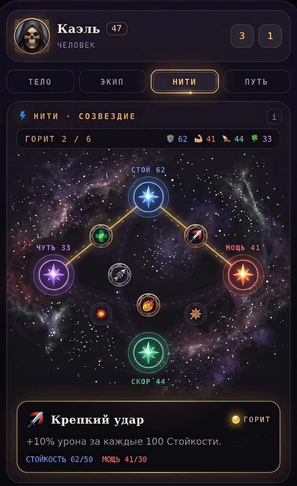
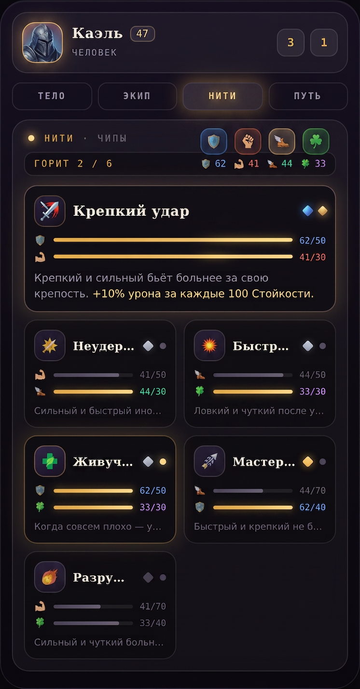
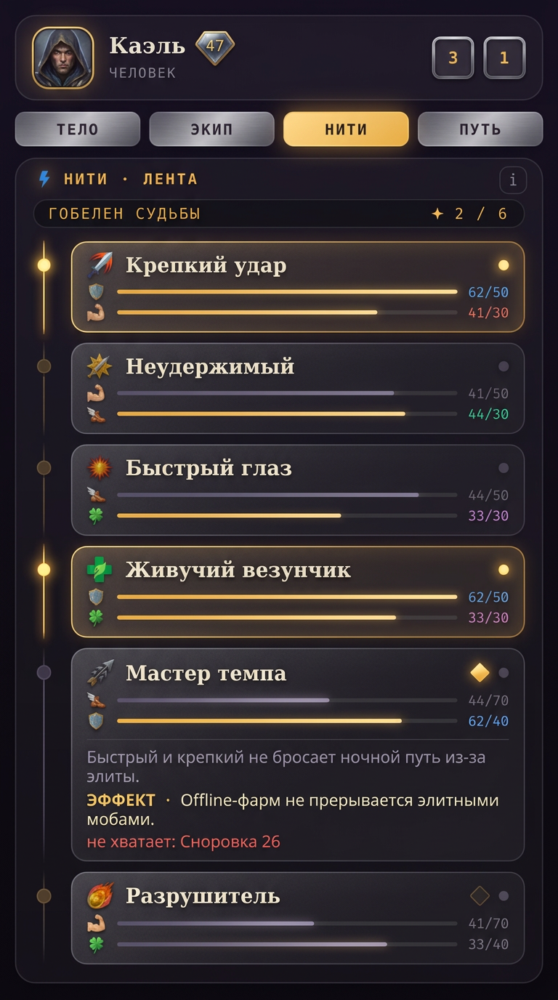
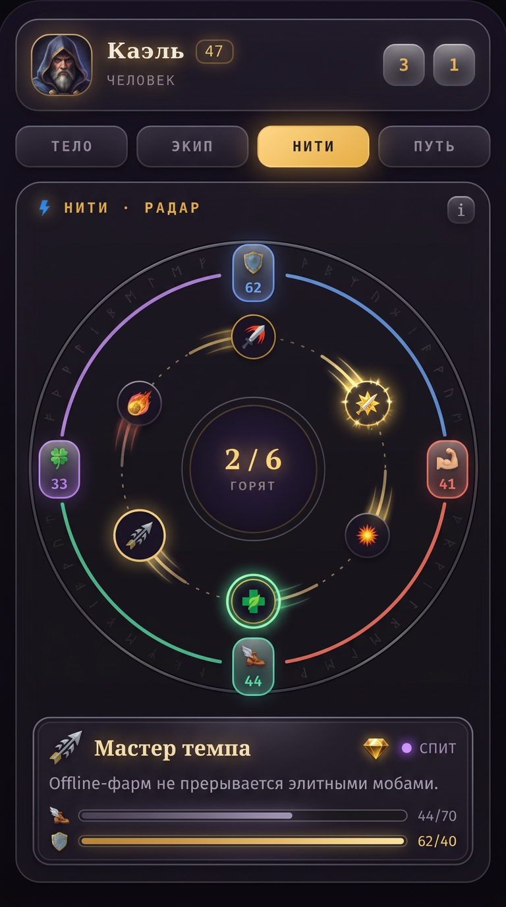

A · Созвездиезвёздная карта: столпы-светила, нити-лучи, узелки-медальоны
B · Бенто-чипыfeatured-карточка + сетка чипов, вся информация сразу
C · Лента-таймлайнсветящийся рельс, узлы-точки, раскрытие с «не хватает»
D · Орбитальный радаркольца, дуги столпов, нити-спутники со шлейфами, центр-ридаут